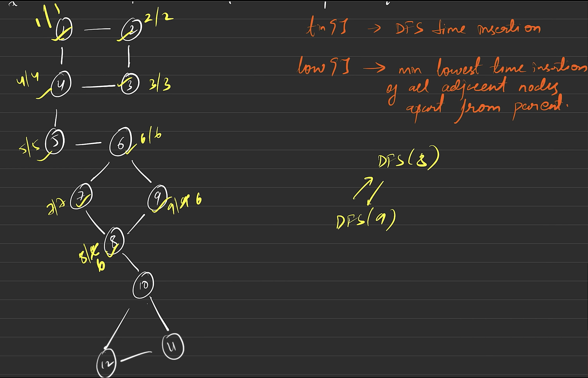

// C++ solution code goes here
class Solution {
int timer{1};
void dfs(int node, int parent, vector<int> &vis, vector<int> adj[], int tin[], int low[],
vector<vector<int>> &bridges)
{
vis[node] = 1;
tin[node] = low[node] = timer;
timer++;
for(auto it: adj[node])
{
if(it == parent) continue;
if(!vis[it])
{
dfs(it, node, vis, adj, tin, low, bridges);
low[node] = min(low[node], low[it]);
if(low[it] > tin[node])
bridges.push_back({it, node});
}
else
{
low[node] = min(low[node], low[it]);
}
}
}
public:
vector<vector<int>> criticalConnections(int n, vector<vector<int>>& connections) {
vector<int> adj[n];
for(auto it: connections)
{
adj[it[0]].push_back(it[1]);
adj[it[1]].push_back(it[0]);
}
vector<int> vis(n, 0);
int tin[n];
int low[n];
vector<vector<int>> bridges;
dfs(0, -1, vis, adj, tin, low, bridges);
return bridges;
}
};
